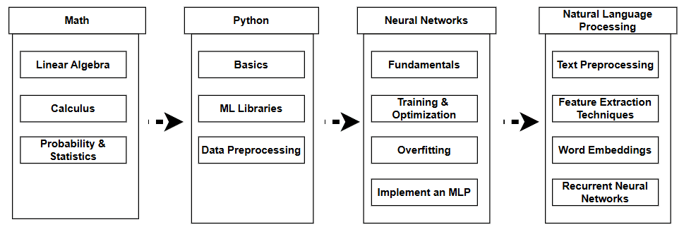
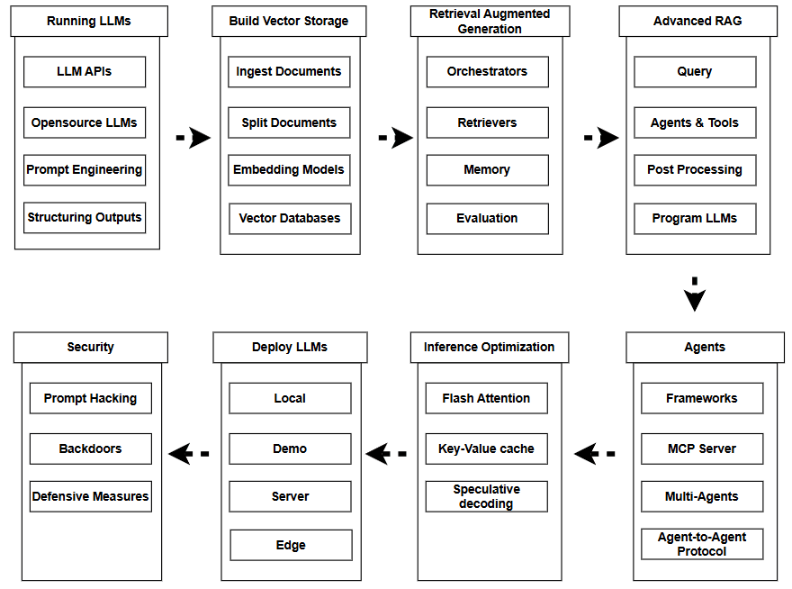

Roadmap Journey
üöÄ Gen AI Basics Roadmap
Start your Gen AI journey with fundamental concepts and core principles..
üîß ML Engineer Roadmap
Develop practical skills for building, deploying, and maintaining machine learning systems in production environments.
üî¨ ML Scientist Roadmap
Master advanced research methodologies and cutting-edge techniques for developing innovative ML solutions.
History of AI Evolution
Birth of Neural Networks
McCulloch and Pitts create the first mathematical model of neural networks
AI Term Coined
John McCarthy coins the term "Artificial Intelligence" at Dartmouth Conference
Expert Systems Era
Development of knowledge-based expert systems for specific domains
Deep Blue Victory
IBM's Deep Blue defeats world chess champion Garry Kasparov
Deep Learning Renaissance
Geoffrey Hinton introduces deep belief networks, sparking deep learning revolution
ImageNet Breakthrough
AlexNet achieves dramatic improvement in image recognition using CNNs
Transformer Architecture
"Attention Is All You Need" paper introduces transformers, revolutionizing NLP
Generative AI Boom
ChatGPT and DALL-E bring AI to mainstream, launching the generative AI era
Current AI Advancements
ü߆ Large Language Models
- GPT-4, Claude, Gemini leading conversational AI
- Multimodal capabilities (text, image, audio)
- Code generation and debugging
- Reasoning and problem-solving
üé® Generative AI
- DALL-E, Midjourney for image generation
- Sora for video synthesis
- Music and audio generation
- 3D model and scene creation
ü§ñ Autonomous Systems
- Self-driving cars and robotics
- Drone navigation and control
- Industrial automation
- Smart home and IoT integration
üî¨ Scientific AI
- Protein folding prediction (AlphaFold)
- Drug discovery acceleration
- Climate modeling and prediction
- Materials science research
AI Hierarchy & Relationships
ü§ñ Artificial Intelligence
The broadest field encompassing any technique that enables machines to mimic human intelligence, including reasoning, learning, and problem-solving.
ü߆ Machine Learning
A subset of AI that enables systems to learn and improve from data without explicit programming, using algorithms to identify patterns.
üï∏Ô∏è Deep Learning
A subset of ML using neural networks with multiple layers to model complex patterns in large amounts of data.
üé® Generative AI
AI systems that create new content (text, images, code, music) based on training data, often using deep learning models.
Introduction to AI Models
What are AI Models?
AI models are mathematical representations that process input data to generate predictions or decisions. They are trained on datasets to learn patterns and relationships.
Model Training Process
- Data Collection & Preprocessing
- Feature Engineering
- Algorithm Selection
- Training & Validation
- Testing & Deployment
Types of AI Models
üìà Supervised Learning
Linear/Logistic Regression, Decision Trees, Random Forest, SVM, Neural Networks
üîç Unsupervised Learning
K-Means, Hierarchical Clustering, PCA, DBSCAN, Autoencoders
üéØ Reinforcement Learning
Q-Learning, Policy Gradient, Actor-Critic, PPO, DDPG
üï∏Ô∏è Deep Learning
CNNs, RNNs, LSTMs, Transformers, GANs, VAEs
Popular AI Models
üîì Open Source Models
- Llama 2/3 (Meta) - Language models
- Mistral 7B/8x7B - Efficient language models
- Stable Diffusion - Image generation
- BERT/RoBERTa - Text understanding
- YOLOv8 - Object detection
- Whisper - Speech recognition
üè¢ Proprietary Models
- GPT-4/4o (OpenAI) - Advanced language model
- Claude 3 (Anthropic) - Constitutional AI
- Gemini (Google) - Multimodal AI
- DALL-E 3 (OpenAI) - Image generation
- Midjourney - Artistic image creation
- Copilot (Microsoft) - Code assistant
üî¨ Research Models
- PaLM (Google) - Large language model
- InstructGPT - Human feedback training
- Flamingo - Few-shot learning
- CLIP - Vision-language understanding
- AlphaFold - Protein structure prediction
- MuZero - Game-playing AI
Development Tools & Frameworks
üêç Python Libraries
TensorFlow, PyTorch, Scikit-learn, Pandas, NumPy
☁️ Cloud Platforms
AWS SageMaker, Google Cloud AI, Azure ML, Databricks
üìä Data Tools
Jupyter, Kaggle, Weights & Biases, MLflow, DVC
üöÄ Deployment
Docker, Kubernetes, FastAPI, Flask, Streamlit
ü§ó Model Hubs
Hugging Face, Model Zoo, TensorFlow Hub, PyTorch Hub
üíª IDEs & Editors
VS Code, PyCharm, Colab, Jupyter Lab, Cursor
Get Started - Learning Resources
üìö Essential Learning Paths
Andrew Ng's foundational ML course Fast.ai - Practical Deep Learning
Hands-on approach to deep learning CS231n - Convolutional Neural Networks
Stanford's computer vision course Hugging Face NLP Course
Comprehensive natural language processing DeepLearning.AI Specializations
Advanced AI and deep learning courses Kaggle Learn
Free micro-courses on ML and data science